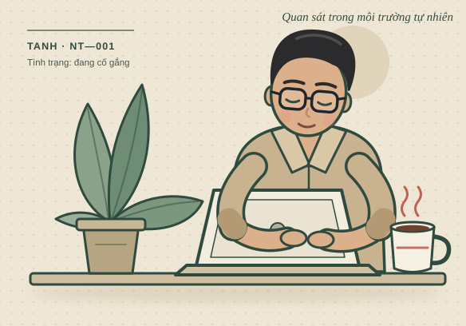

Tập tính sinh hoạt
Hoạt động tốt sau ly cà phê đầu tiên. Có thể ngồi im hàng giờ trước laptop, nhưng sẽ xuất hiện ngay khi nghe “ăn không?”.
01 — HÀNH ĐỘNG VÌ CHIẾC BỤNG
Chọn một mức tiếp tế hoặc nhập số tiền bạn muốn.
Mã QR sẽ cập
nhật ngay theo lựa chọn.
Ít hay nhiều đều đáng quý. Ghé chơi thôi cũng vui rồi.
Mở ứng dụng ngân hàng để quét mã

TCB · 1212141000 · CẢM ƠN ĐÃ NUÔI TANH
MỘT CÁ THỂ ĐANG CẦN BẠN
Không cần giải cứu thế giới. Hôm nay, bạn có thể giải cứu bữa trưa của một người đang cố gắng trưởng thành.
Tôi muốn nuôi cá thể nàyMột chút tiếp tế. Một ngày bớt đói.

02 — TÌM HIỂU TRƯỚC KHI NUÔI
Tanh là một cá thể khá dễ chăm sóc. Chỉ cần đủ cơm, đủ ngủ và đôi lúc được nghe: “Thôi, hôm nay để tôi mời.”
Chưa biết cứu thế giới,Hoạt động tốt sau ly cà phê đầu tiên. Có thể ngồi im hàng giờ trước laptop, nhưng sẽ xuất hiện ngay khi nghe “ăn không?”.
Cho ăn đều đặn. Động viên vừa đủ. Tránh hỏi “bao giờ giàu?” trong lúc cá thể đang ăn mì gói.
Thêm một người được ăn ngon, thế giới bớt đi một chiếc bụng réo. Đóng góp nhỏ, tiếng réo giảm rõ rệt.
03 — GIẢI ĐÁP TỪ BAN BẢO TỒN
Một vài điều bạn có thể đang tò mò trước khi nhận nuôi từ xa.
Có chứ. Tanh vẫn tự lo cuộc sống của mình. Đây đơn giản là một góc nhỏ để bạn mời Tanh ly cà phê hoặc bữa cơm, nếu thấy quý.
Không. “Quỹ bảo tồn Tanh” là tên gọi vui của trang cá nhân. Khoản tiếp tế được gửi cho Tanh và dùng cho chi tiêu cá nhân, không phải hoạt động quyên góp từ thiện.
Xin phép chỉ nhận nuôi từ xa. Cá thể đã quen với môi trường sống hiện tại và vị trí ổ điện ở đó.
Đây là Nuôi Tanh tại nuoitanh.com — một phiên bản “nuôi tôi” vui vẻ dành riêng cho Tanh. Bạn ghé đọc, cười một chút hoặc gửi lời động viên cũng đủ làm ngày của Tanh vui hơn rồi.
MỘT CHÚT TỬ TẾ CŨNG LÀ TIẾP TẾ
Tanh chúc bạn hôm nay có một bữa ăn ngon.
MỘT CÁCH TIẾP TẾ KHÔNG TỐN PHÍ
Nhấp vào nút sau để mở một sản phẩm ngẫu nhiên ở tab mới. Nếu tiện, bạn có thể xem qua và ủng hộ Tanh từ đó.